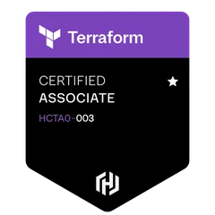

01
Programming
Languages and frameworks I ship with
- Python
- SQL · T-SQL
- Java
- Bash
- REST APIs
- FastAPI
- Flask
- Data structures & algorithms
MLOps Engineer · California, USA
I build ML systems, data pipelines, cloud platforms and AI workflows that hold up in production.
HashiCorp Certified Terraform Associate & Google Cloud Professional Cloud Architect
02
I build ML systems that hold up in production: messy data, strict reliability bars, real decisions on the line.
I'm an MLOps engineer who likes the unglamorous middle of machine learning. That's the part between a promising notebook and a model people can actually depend on. I've built survival and risk models for healthcare, heart-failure readmission models in research, cloud automation at Amazon, and the Linux and DevOps foundations underneath all of it.
Along the way I've published three peer-reviewed papers, serve on the Program Committee for ICTAI 2026, and won the 2026 Preston Ventures AI Hackathon with a Claude-powered agent system on AWS Bedrock. I work AI-augmented with Claude Code, and the judgment calls stay mine.
What excites me: AI systems that do real work reliably. Agents with clear verifiers, and pipelines that don't page you at 3am.
03
Languages and frameworks I ship with
Modeling, evaluation and deep learning
Taking models to production and keeping them healthy
Where the systems run
Pipelines, storage and data quality
The foundations underneath
04

HashiCorp05
Preston Ventures, LLC · Aliso Viejo, CA
University of Cincinnati · Cincinnati, OH
Amazon · Chennai, India
EduSkills Foundation · Hyderabad, India
LinuxWorld Informatics Pvt. Ltd. · Jaipur, India
06
–
University of Cincinnati · Cincinnati, OH
–
Sreenidhi Institute of Science and Technology · Hyderabad, India
07
RL-driven cloud-native auto-scaling
A reinforcement-learning agent makes proactive scaling decisions from live CPU, memory and request-rate metrics, instead of reacting to fixed thresholds.
Model-to-production MLOps pipeline
A model-agnostic template that trains, packages, deploys and monitors any ML model, with GitOps rollouts and live dashboards.
Cloud-native CI/CD on AWS
Provisions a VPC and EKS cluster with Terraform, then builds and deploys a containerized app through GitHub Actions, and tears everything down to keep costs at zero.
Cincinnati public transportation accessibility
Scores the accessibility of 3,000+ Cincinnati bus stops from 30,000 street-view images, detecting shelters, benches, signage and pavement conditions.
Predictive analysis from EHR data
Predicts which heart-failure patients will be readmitted after discharge, giving clinicians earlier signals for care and hospital resource planning.
Machine learning for resource forecasting
Collects EC2 CPU and network metrics every hour and trains an LSTM to forecast utilization, so scaling can happen before demand arrives.
08
Hiring for MLOps or ML platform work, or want to talk about a project? Send a note and I'll reply by email.